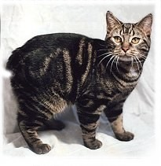

The Manx cat comes as both longhair and shorthair and resembles a little bowling ball. Most of them don't have a tail, but are still gentle and devoted companions. They are very affectionate and are sometimes described as "doglike" due to their dog-like behavior. They have very round heads and have longer back legs than forelegs, making them seem silly.
